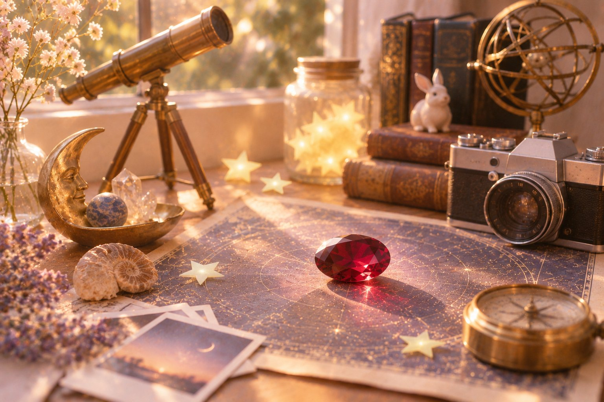

You send your crush a fascinating fact about the universe instead of admitting you miss them. You insist that you enjoy being alone, then secretly wish someone would come over. Aquarius (January 20 to February 18) has a birthstone called garnet, whose deep wine red tells a surprisingly emotional story.

The Aquarius everyone knows
Why Does Everyone Think Aquarius Is So Different?
You're the friend who asks whether aliens might have their own version of astrology halfway through a conversation about someone's boyfriend.
Your interests change unexpectedly. Last week it was ancient mythology. This week you're fascinated by abandoned buildings.
You wear things other people wouldn't think of putting together, and somehow they look wonderful.
You've never quite understood why everyone wants to be exactly like everyone else.
Your friends might not always follow your train of thought, but life is certainly more interesting when they're sitting next to you.
The Aquarius nobody sees
Are You Secretly More Sentimental Than Anyone Realizes?
For someone who talks so much about independence, you get surprisingly attached to certain people.
You remember the first conversation you had with someone special. You secretly love the idea of having a song that belongs to just two people.
Sometimes you wish someone would understand your strange little thoughts without needing an explanation.
In George Kunz's 1913 book The Curious Lore of Precious Stones, Aquarius's stone is garnet.
Its deep wine red mirrors the intense affection you rarely express.
Being understood might be the most romantic thing imaginable to you.
Behind that wonderfully unusual mind
Why Does Aquarius Seem So Emotionally Distant?
Someone tells you that you're emotionally unavailable.
Interesting theory.
You've actually been thinking about them all afternoon, but somehow sending a funny picture felt easier than saying you missed them.
When conversations become too emotional, you occasionally escape into a discussion about something completely unrelated.
You need your own space, even when you're deeply in love. You want someone who understands that disappearing for an afternoon doesn't mean your feelings have disappeared too.
People mistake your independence for indifference. They rarely realize how much certain people mean to you.
When the universe gets a little quieter
Who Gets to Explore Your Secret Universe?
It's 2 a.m. You've been reading about distant galaxies, and somehow you've ended up thinking about your crush.
You imagine sitting on a rooftop together, talking about everything from childhood memories to whether time actually exists.
You open your journal and write something far more romantic than anything you've ever said out loud.
Maybe wine red is the color of those feelings that seem too enormous for ordinary words.
Somewhere out there in the universe, you'd really like to find someone whose favorite mystery is you.
When your wine-red side wants out, Gemflow turns ruby into slow-moving light on your phone, so you can watch your inner color for once.
Garnet is the Aquarius birthstone, a deep wine red that mirrors the deeply sentimental soul hidden inside you.